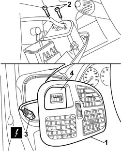

1058A20 CNG/METHANE SWITCH - R.R.
- Path
- Procedures > 10 ENGINE UNIT > 1058 GAS CIRCUIT > 1058A GAS CIRCUIT MULTI POINT INJECTION > 1058A20 CNG/METHANE SWITCH - R.R.
- Kind
- repair procedure (removal / refitting; the operation number is the code)
- Applies to
- engines: 2.0 16V; all production periods
- Interactive page
- https://sloeber94.github.io/elrnDB-fDct/en/#/244000818
Applies to: engines: 2.0 16V; all production periods
 Removing
Removing
 Refitting
RefittingDisconnect the negative battery terminal.
1. Release the left side vent.
2. Undo the bolts fixing the CNG/petrol selector switch to the trim.
3. Disconnect the electrical connection.
4. Remove the CNG/petrol selector switch from the housing in the trim.

Applies to: engines: 2.0 16V; all production periods
Refitting
RemovingFit the CNG/petrol selector switch and tighten the fixing bolts.
Connect the electrical connection for the switch.
Fit the left side vent and check that it is secured.
Connect the negative battery terminal.